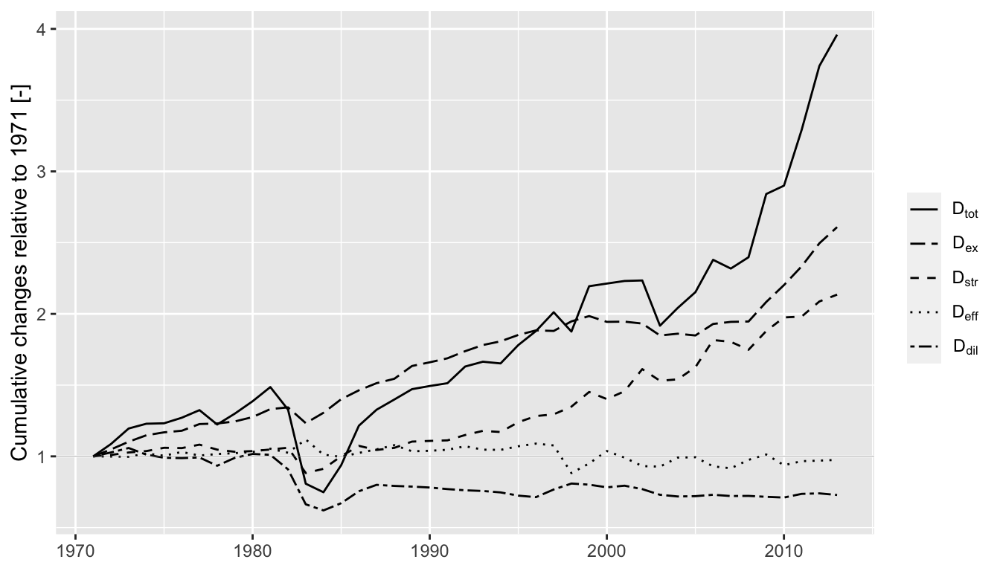

LMDIR
vignettes/LMDIR.Rmd
LMDIR.RmdLog-mean divisia index (LMDI) decomposition analysis is an important technique for understanding causes of changes in an energy composite over time. The technique was pioneered by B.W. Ang and is described in detail in Ang (2005). LMDI decomposes an energy aggregate by factors and categories.
Heun and Brockway (2019) developed a matrix representation of the LMDI mathematics that works well with the Physical Supply Use Table (PSUT) framework developed by Heun et al. (2018). This vignette describes and provides examples for the matrix method for LMDI decomposition analysis. This vignette is a version of Section S3 of the Supplemental Information to Heun and Brockway (2019).
The LMDI approach pioneered by Ang et al. (1998) and described in detail by Liu and Ang (2003) decomposes an energy aggregate (\(V\)) by factors (\(x\)) that cause \(V\) to change over time. (In this vignette, we adopt the notation of Ang (2005).)
Noting that at a given time every combination of energy category (\(i\)) and decomposition factor (\(j\)) has an associated numerical value for the decomposition factor (\(x_{ij}\)), the matrix approach to LMDI decomposition analysis begins with formation of an \(\mathbf{X}\) matrix for each time of interest. Rows of \(\mathbf{X}\) contain energy categories (indexed by \(i\)) of the aggregate (\(V\)) and columns of \(\mathbf{X}\) contain decomposition factors (indexed by \(j\)).
Column vector \(\mathbf{v}\) contains the value of each energy category (\(v_i\)) and is formed from row products of \(\mathbf{X}\).
\[\begin{equation} \label{eq:v} v_i = \prod_j x_{ij} \end{equation}\]
At any given time, the energy aggregate (\(V\)) is obtained by the column sum of elements in the \(\mathbf{v}\) vector
\[\begin{equation} \label{eq:V} V = \mathbf{i}^\mathrm{T} \mathbf{v} \; , \end{equation}\]
where \(\mathbf{i}\) is a column vector of 1’s (an identity vector) of same size as \(\mathbf{v}\).
Additive (\(\Delta V\)) and multiplicative (\(D\)) changes in the energy aggregate (\(V\)) between two adjacent times, an initial time (superscript \(0\)) and a later time (superscript \(T\)), are calculated by
\[\begin{equation} \label{eq:deltaV_def} \Delta V = V^T - V^0 \; , \end{equation}\]
and
\[\begin{equation} \label{eq:D_def} D = \frac{V^T}{V^0} \; . \end{equation}\]
A \(\mathbf{Z}\) matrix is formed for two adjacent times by
\[\begin{equation} \label{eq:Z_eqn_element_notation} Z_{ij} = \frac{v_i^T - v_i^0}{\ln \left( \frac{v_i^T}{v_i^0}\right)} \ln \left( \frac{x_{ij}^T}{x_{ij}^0} \right) , \end{equation}\]
with care taken to address the zero-value problem noted by Ang et al. (1998) in Table 2 and discussed at length by Wood and Lenzen (2006).
Given the \(\mathbf{Z}\) matrix defined by the equation for \(Z_{ij}\) above, a \(\Delta \mathbf{v}\) vector is calculated by column sums of \(\mathbf{Z}\)
\[\begin{equation} \label{eq:deltaV_eqn} \Delta \mathbf{V} = \mathbf{i}^\mathrm{T} \mathbf{Z} \; , \end{equation}\]
where entries in \(\Delta \mathbf{V}\) give the additive contribution of the \(j^\mathrm{th}\) decomposition factor to changes in \(V\) from time \(0\) to time \(T\).
Multiplicative decomposition is obtained with the \(\mathbf{D}\) row vector calculated by
\[\begin{equation} \label{eq:D_eqn} D_j = \exp \left( \frac{\Delta V_j}{\frac{V^T - V^0}{\ln \frac{V^T}{V^0}}} \right) \; , \end{equation}\]
where entries in \(\mathbf{D}\) give the multiplicative contribution of the \(j^\mathrm{th}\) decomposition factor to changes in \(V\) from time \(0\) to time \(T\).
Verification can be performed by
\[\begin{equation} \label{eq:deltaV_check} \Delta \mathbf{V} \mathbf{i} \overset{?}{=} V^T - V^0 \; , \end{equation}\]
and
\[\begin{equation} \label{eq:D_check} \prod_j D_j \overset{?}{=} \frac{V^T}{V^0}\; . \end{equation}\]
Cumulative changes in \(V\) over many time periods can be calculated by cumulative sums of the \(\Delta \mathbf{V}\) row vector for additive decomposition and by cumulative products of the \(\mathbf{D}\) row vector for multiplicative decomposition.
An energy conversion chain (ECC) is a set of energy carriers, energy transformation devices, and energy services within spatial and temporal boundaries of interest. For the purposes of this vignette, an ECC comprises primary, final, and useful energy and exergy flowing through society.
Following Brockway et al. (2015), one energy aggregate from an ECC is total useful exergy supplied to the economy (\(X_u\)). \(X_u\) is comprised of subcategories (\(sc\), Heat, Electric, Mechanical Drive (Petroleum), and Muscle Work) and subsubcategories (\(ssc\), such as KE–Fans and MD–Tractors). The decomposition factors are given in the following table.
| factor | description |
|---|---|
| \(X_p\) | Total primary exergy supplied to the economy |
| \(\phi_{p,sc}\) | Allocation ratio of primary exergy (\(p\)) to subcategory (\(sc\)) (Heat, Electric, Mechanical drive, Muscle work) |
| \(\phi_{sc,ssc}\) | Allocation ratio of exergy from subcategory (\(sc)\) to subsubcategory (\(ssc\)) (MD - Diesel trains, Electric lights, etc.) |
| \(\eta_{ssc}\) | Primary-to-useful thermodynamic efficiency of subsubcategory (\(ssc\)) |
In equation form, the energy aggregate (\(X_u\)) is calculated by
\[\begin{equation} \label{eq:X_u_eqn} X_u = \sum_{ssc} X_{u,ssc} \; , \end{equation}\]
and
\[\begin{equation} \label{eq:X_u_i_eqn} X_{u,ssc} = X_{p,tot} \phi_{p,sc} \phi_{sc,ssc} \eta_{ssc} = X_{p,tot} \frac{X_{sc}}{X_{p,tot}} \frac{X_{ssc}}{X_{sc}} \frac{X_{u,ssc}}{X_{p,ssc}} \; . \end{equation}\]
Note that \(X_{p,ssc}\) is the embodied primary exergy of the useful exergy produced by the subsubcategory (\(X_{u,ssc}\)).
To demonstrate the matrix approach to LMDI decomposition analysis, we begin with a simple example that is small enough to allow replication of the results by hand calculations if desired
but sufficient detail to illustrate features of the calculations.
A data frame of \(\mathbf{X}\) matrices is the starting point for a simple example. The example has two fictitious countries (AB and YZ) and covers four years (1971–1974). Countries AB and YZ are identical for the purposes of illustration.
library(dplyr) library(ggplot2) library(LMDIR) library(magrittr) library(matsbyname) library(matsindf) library(tidyr) DF <- create_simple_LMDI() #> Warning: The `add` argument of `group_by()` is deprecated as of dplyr 1.0.0. #> Please use the `.add` argument instead. #> This warning is displayed once every 8 hours. #> Call `lifecycle::last_warnings()` to see where this warning was generated. DF #> Country Year X #> 1 AB 1971 1, 4, 10, 5, 2, 3 #> 2 AB 1972 4, 5, 5, 6, 3, 4 #> 3 AB 1973 8, 5, 2, 7, 4, 5 #> 4 AB 1974 10, 6, 1, 8, 5, 6 #> 5 YZ 1971 1, 4, 10, 5, 2, 3 #> 6 YZ 1972 4, 5, 5, 6, 3, 4 #> 7 YZ 1973 8, 5, 2, 7, 4, 5 #> 8 YZ 1974 10, 6, 1, 8, 5, 6
For the remainder of these examples, only the first four rows will be shown. (Rows 5–8 for country YZ are the same as rows 1–4 for country AB.)
The X column of the data frame contains \(\mathbf{X}\) matrices. The \(\mathbf{X}\) matrices contain all the information about energy categories and factors. The \(\mathbf{X}\) matrices are all that is needed to perform the LMDI analysis.
DF[1:4, ]$X #> [[1]] #> factor 1 factor 2 factor 3 #> subsubcat 1 1 10 2 #> subsubcat 2 4 5 3 #> attr(,"rowtype") #> [1] "subsubcat" #> attr(,"coltype") #> [1] "factor" #> #> [[2]] #> factor 1 factor 2 factor 3 #> subsubcat 1 4 5 3 #> subsubcat 2 5 6 4 #> attr(,"rowtype") #> [1] "subsubcat" #> attr(,"coltype") #> [1] "factor" #> #> [[3]] #> factor 1 factor 2 factor 3 #> subsubcat 1 8 2 4 #> subsubcat 2 5 7 5 #> attr(,"rowtype") #> [1] "subsubcat" #> attr(,"coltype") #> [1] "factor" #> #> [[4]] #> factor 1 factor 2 factor 3 #> subsubcat 1 10 1 5 #> subsubcat 2 6 8 6 #> attr(,"rowtype") #> [1] "subsubcat" #> attr(,"coltype") #> [1] "factor"
To see how the factors affect the aggregate over time, we can perform the LMDI decomposition analysis. But we first group by Country to ensure that each Country will be treated separately. (lmdi() respects grouping.)
The result of the call to lmdi() is DF with additional columns.
glimpse(res) #> Rows: 8 #> Columns: 13 #> Groups: Country [2] #> $ Country <chr> "AB", "AB", "AB", "AB", "YZ", "YZ", "YZ", "YZ" #> $ Year <dbl> 1971, 1972, 1973, 1974, 1971, 1972, 1973, 1974 #> $ X <list> [<matrix[2 x 3]>, <matrix[2 x 3]>, <matrix[2 x 3]>, <matr… #> $ V <list> [80, 180, 239, 338, 80, 180, 239, 338] #> $ Z <list> [<matrix[2 x 3]>, <matrix[2 x 3]>, <matrix[2 x 3]>, <matr… #> $ dV_agg <list> [0, 100, 59, 99, 0, 100, 59, 99] #> $ D_agg <list> [1, 2.25, 1.327778, 1.414226, 1, 2.25, 1.327778, 1.414226] #> $ dV <list> [<matrix[3 x 1]>, <matrix[3 x 1]>, <matrix[3 x 1]>, <matr… #> $ D <list> [<matrix[3 x 1]>, <matrix[3 x 1]>, <matrix[3 x 1]>, <matr… #> $ dV_agg_cum <list> [0, 100, 159, 258, 0, 100, 159, 258] #> $ D_agg_cum <list> [1, 2.25, 2.9875, 4.225, 1, 2.25, 2.9875, 4.225] #> $ dV_cum <list> [<matrix[3 x 1]>, <matrix[3 x 1]>, <matrix[3 x 1]>, <matr… #> $ D_cum <list> [<matrix[3 x 1]>, <matrix[3 x 1]>, <matrix[3 x 1]>, <matr…
Each additional column provides results of the LMDI analysis. Both additive and multiplicative results are provided.
The V column contains aggregates (\(V\)), with the first year assigned a value of 0.
res$V %>% unlist() #> [1] 80 180 239 338 80 180 239 338
The Z column contains \(\mathbf{Z}\) matrices, with the first year assigned a value of 1.
res[1:4, ]$Z #> [[1]] #> factor 1 factor 2 factor 3 #> subsubcat 1 0 0 0 #> subsubcat 2 0 0 0 #> attr(,"rowtype") #> [1] "subsubcat" #> attr(,"coltype") #> [1] "factor" #> #> [[2]] #> factor 1 factor 2 factor 3 #> subsubcat 1 50.47438 -25.23719 14.76281 #> subsubcat 2 19.31569 15.78206 24.90225 #> attr(,"rowtype") #> [1] "subsubcat" #> attr(,"coltype") #> [1] "factor" #> #> [[3]] #> factor 1 factor 2 factor 3 #> subsubcat 1 42.96021 -56.79031 17.83010 #> subsubcat 2 0.00000 22.47129 32.52871 #> attr(,"rowtype") #> [1] "subsubcat" #> attr(,"coltype") #> [1] "factor" #> #> [[4]] #> factor 1 factor 2 factor 3 #> subsubcat 1 12.65498 -39.30996 12.65498 #> subsubcat 2 41.35566 30.28868 41.35566 #> attr(,"rowtype") #> [1] "subsubcat" #> attr(,"coltype") #> [1] "factor"
Note that calculating the entries in the \(\mathbf{Z}\) matrices requires evaluating 8 degenerate cases as shown in Table 2, p. 492 of Ang et al. (1998). Evaluation of the 8 degenerate cases is performed by the Zij() function.
Zij #> function(i = NULL, j = NULL, X_0 = NULL, X_T = NULL, #> v_0i1 = matsbyname::rowprods_byname(X_0)[i, 1], #> v_Ti1 = matsbyname::rowprods_byname(X_T)[i, 1], #> X_0ij = X_0[i, j], #> X_Tij = X_T[i, j]){ #> #> # Check the conditions, found in Table 2, p. 492 of #> # B.W. Ang and F.Q. Zhang and Ki-Hong Choi, 1998, #> # Factorizing changes in energy and environmental indicators through decomposition, #> # Energy, Volume 23, Number 6, pp. 489-495. #> if (v_0i1 == 0 & v_Ti1 > 0 & X_0ij == 0 & X_Tij > 0) { #> # Case 1 #> return(v_Ti1) #> #> } else if (v_0i1 > 0 & v_Ti1 == 0 & X_0ij > 0 & X_Tij == 0) { #> # Case 2 #> return(-v_0i1) #> #> } else if (v_0i1 == 0 & v_Ti1 > 0 & X_0ij > 0 & X_Tij > 0) { #> # Case 3 #> return(0) #> #> } else if (v_0i1 > 0 & v_Ti1 == 0 & X_0ij > 0 & X_Tij > 0) { #> # Case 4 #> return(0) #> #> } else if (v_0i1 == 0 & v_Ti1 == 0 & X_0ij > 0 & X_Tij > 0) { #> # Case 5 #> return(0) #> #> } else if (v_0i1 == 0 & v_Ti1 == 0 & X_0ij == 0 & X_Tij == 0) { #> # Case 6 #> return(0) #> #> } else if (v_0i1 == 0 & v_Ti1 == 0 & X_0ij > 0 & X_Tij == 0) { #> # Case 7 #> return(0) #> #> } else if (v_0i1 == 0 & v_Ti1 == 0 & X_0ij == 0 & X_Tij > 0) { #> # Case 8 #> return(0) #> #> } else if (v_0i1 > 0 & v_Ti1 > 0 & X_0ij > 0 & X_Tij > 0) { #> # This is the non-degenerate case #> return(matsbyname::logmean(v_Ti1, v_0i1) * log(X_Tij / X_0ij)) #> } #> # We should never get here. #> stop("Unknown conditions for v_0i1, v_Ti1, X_0ij, and X_Tij in Zij") #> } #> <bytecode: 0x7fefa5e16418> #> <environment: namespace:LMDIR>
The dV_agg column contains year-to-year differences in the aggregate (\(V\)).
res[1:4, ]$dV_agg %>% unlist() #> [1] 0 100 59 99
The D_agg column contains year-to-year ratios of the aggregate (\(V\)).
res$D_agg %>% unlist() #> [1] 1.000000 2.250000 1.327778 1.414226 1.000000 2.250000 1.327778 1.414226
The dV column contains \(\mathbf{\Delta V}\) vectors.
res[1:4, ]$dV #> [[1]] #> subsubcat #> factor 1 0 #> factor 2 0 #> factor 3 0 #> attr(,"rowtype") #> [1] "factor" #> attr(,"coltype") #> [1] "subsubcat" #> #> [[2]] #> subsubcat #> factor 1 69.790066 #> factor 2 -9.455126 #> factor 3 39.665060 #> attr(,"rowtype") #> [1] "factor" #> attr(,"coltype") #> [1] "subsubcat" #> #> [[3]] #> subsubcat #> factor 1 42.96021 #> factor 2 -34.31903 #> factor 3 50.35881 #> attr(,"rowtype") #> [1] "factor" #> attr(,"coltype") #> [1] "subsubcat" #> #> [[4]] #> subsubcat #> factor 1 54.010642 #> factor 2 -9.021285 #> factor 3 54.010642 #> attr(,"rowtype") #> [1] "factor" #> attr(,"coltype") #> [1] "subsubcat"
The D column contains \(\mathbf{D}\) vectors.
res[1:4, ]$D #> [[1]] #> subsubcat #> factor 1 1 #> factor 2 1 #> factor 3 1 #> attr(,"rowtype") #> [1] "factor" #> attr(,"coltype") #> [1] "subsubcat" #> #> [[2]] #> subsubcat #> factor 1 1.7611178 #> factor 2 0.9261913 #> factor 3 1.3794101 #> attr(,"rowtype") #> [1] "factor" #> attr(,"coltype") #> [1] "subsubcat" #> #> [[3]] #> subsubcat #> factor 1 1.2292846 #> factor 2 0.8479702 #> factor 3 1.2737739 #> attr(,"rowtype") #> [1] "factor" #> attr(,"coltype") #> [1] "subsubcat" #> #> [[4]] #> subsubcat #> factor 1 1.2081402 #> factor 2 0.9689115 #> factor 3 1.2081402 #> attr(,"rowtype") #> [1] "factor" #> attr(,"coltype") #> [1] "subsubcat"
The remaining columns have the _cum suffix and represent cumulative values. The dV_agg_cum column gives cumulative differences in the aggregate (\(V\)) relative to the first time.
res$dV_agg_cum %>% unlist() #> [1] 0 100 159 258 0 100 159 258
The D_agg_cum column gives cumulative ratios of the aggregate (\(V\)) relative to the first time.
res$D_agg_cum %>% unlist() #> [1] 1.0000 2.2500 2.9875 4.2250 1.0000 2.2500 2.9875 4.2250
The dV_cum column gives the cumulative differences in the \(\mathbf{\Delta V}\) vectors relative to the first time.
res[1:4, ]$dV_cum #> [[1]] #> subsubcat #> factor 1 0 #> factor 2 0 #> factor 3 0 #> attr(,"rowtype") #> [1] "factor" #> attr(,"coltype") #> [1] "subsubcat" #> #> [[2]] #> subsubcat #> factor 1 69.790066 #> factor 2 -9.455126 #> factor 3 39.665060 #> attr(,"rowtype") #> [1] "factor" #> attr(,"coltype") #> [1] "subsubcat" #> #> [[3]] #> subsubcat #> factor 1 112.75028 #> factor 2 -43.77415 #> factor 3 90.02387 #> attr(,"rowtype") #> [1] "factor" #> attr(,"coltype") #> [1] "subsubcat" #> #> [[4]] #> subsubcat #> factor 1 166.76092 #> factor 2 -52.79544 #> factor 3 144.03451 #> attr(,"rowtype") #> [1] "factor" #> attr(,"coltype") #> [1] "subsubcat"
The D_cum column gives the cumulative ratios of the \(\mathbf{D}\) vectors relative to the first time.
res[1:4, ]$D_cum #> [[1]] #> subsubcat #> factor 1 1 #> factor 2 1 #> factor 3 1 #> attr(,"rowtype") #> [1] "factor" #> attr(,"coltype") #> [1] "subsubcat" #> #> [[2]] #> subsubcat #> factor 1 1.7611178 #> factor 2 0.9261913 #> factor 3 1.3794101 #> attr(,"rowtype") #> [1] "factor" #> attr(,"coltype") #> [1] "subsubcat" #> #> [[3]] #> subsubcat #> factor 1 2.1649150 #> factor 2 0.7853827 #> factor 3 1.7570566 #> attr(,"rowtype") #> [1] "factor" #> attr(,"coltype") #> [1] "subsubcat" #> #> [[4]] #> subsubcat #> factor 1 2.6155209 #> factor 2 0.7609663 #> factor 3 2.1227708 #> attr(,"rowtype") #> [1] "factor" #> attr(,"coltype") #> [1] "subsubcat"
The objective of this analysis is to discern the drivers of changes to useful exergy supplied to the Ghanaian economy over time, expressed in multiplicative form. To achieve this objective, we will perform and report results of an LMDI analysis of the Ghanaian energy conversion chain. This analysis also serves to demonstrate the use of the LMDIR package with data from a real energy conversion chain.
We’ll use data from Heun and Brockway (2019) for exergy flows through Ghanaian society. The data frame consists of annual \(\mathbf{X}\) matrices for Ghana over the period 1971–2013. This data frame is available as LMDIR::XGH.
glimpse(XGH) #> Rows: 43 #> Columns: 3 #> $ Country <chr> "GH", "GH", "GH", "GH", "GH", "GH", "GH", "GH", "GH", "GH", "… #> $ Year <dbl> 1971, 1972, 1973, 1974, 1975, 1976, 1977, 1978, 1979, 1980, 1… #> $ X <list> [<matrix[22 x 4]>, <matrix[22 x 4]>, <matrix[22 x 4]>, <matr…
Each \(\mathbf{X}\) matrix contains useful exergy subsubcategories (in rows) and factors (in columns) as shown below for Ghana for 2003 and 2004.
prettifyXZ <- function(XZ){ out <- XZ %>% sort_rows_cols(roworder = c( # Heat categories (phi_i = 0.622) "HTH.600.C - Electric heaters", "MTH.100.C - Charcoal stoves", "MTH.100.C - Kerosene stoves", "MTH.100.C - LPG stoves", "MTH.100.C - Wood stoves", # Electricity categories (phi_i = 0.020) "KE - Fans", "Light - Electric lights", "Light - Televisions", "LTH.-10.C - Refrigerators", "MD - Electric motors", "MD - Other appliances", "MTH.100.C - Electric heaters", "MTH.200.C - Irons", "MTH.200.C - Electric heaters", # Liquid petroleum categories (phi_i = 0.131) "MD - Boat engines", "MD - Diesel cars", "MD - Diesel trains", "MD - Industry static diesel engines", "MD - Petrol cars", "MD - Tractors", # Food and feed categories (phi_i = 0.226) "MD - Draught animals", "MD - Manual laborers"), colorder = c("EXp.ktoe", "phi_i", "phi_ij", "eta_ij")) out[ , "EXp.ktoe"] <- round(out[ , "EXp.ktoe"], 1) out[ , "phi_i"] <- round(out[ , "phi_i"], 3) out[ , "phi_ij"] <- round(out[ , "phi_ij"], 3) out[ , "eta_ij"] <- round(out[ , "eta_ij"], 3) return(out) } XGH %>% filter(Year == 2003) %>% extract2("X") %>% extract2(1) %>% prettifyXZ() #> EXp.ktoe phi_i phi_ij eta_ij #> HTH.600.C - Electric heaters 7911.4 0.519 0.005 0.343 #> MTH.100.C - Charcoal stoves 7911.4 0.519 0.328 0.015 #> MTH.100.C - Kerosene stoves 7911.4 0.519 0.031 0.064 #> MTH.100.C - LPG stoves 7911.4 0.519 0.015 0.085 #> MTH.100.C - Wood stoves 7911.4 0.519 0.622 0.024 #> KE - Fans 7911.4 0.081 0.035 0.069 #> Light - Electric lights 7911.4 0.081 0.211 0.023 #> Light - Televisions 7911.4 0.081 0.039 0.001 #> LTH.-10.C - Refrigerators 7911.4 0.081 0.212 0.026 #> MD - Electric motors 7911.4 0.081 0.359 0.487 #> MD - Other appliances 7911.4 0.081 0.015 0.487 #> MTH.100.C - Electric heaters 7911.4 0.081 0.090 0.105 #> MTH.200.C - Irons 7911.4 0.081 0.016 0.222 #> MTH.200.C - Electric heaters 7911.4 0.081 0.024 0.181 #> MD - Boat engines 7911.4 0.188 0.050 0.141 #> MD - Diesel cars 7911.4 0.188 0.345 0.123 #> MD - Diesel trains 7911.4 0.188 0.024 0.162 #> MD - Industry static diesel engines 7911.4 0.188 0.192 0.261 #> MD - Petrol cars 7911.4 0.188 0.368 0.160 #> MD - Tractors 7911.4 0.188 0.020 0.062 #> MD - Draught animals 7911.4 0.212 0.789 0.006 #> MD - Manual laborers 7911.4 0.212 0.211 0.018 #> attr(,"rowtype") #> [1] "category" #> attr(,"coltype") #> [1] "factor" XGH %>% filter(Year == 2004) %>% extract2("X") %>% extract2(1) %>% prettifyXZ() #> EXp.ktoe phi_i phi_ij eta_ij #> MTH.100.C - Charcoal stoves 7964.8 0.499 0.350 0.015 #> MTH.100.C - Kerosene stoves 7964.8 0.499 0.035 0.059 #> MTH.100.C - LPG stoves 7964.8 0.499 0.020 0.077 #> MTH.100.C - Wood stoves 7964.8 0.499 0.595 0.024 #> KE - Fans 7964.8 0.059 0.036 0.096 #> Light - Electric lights 7964.8 0.059 0.210 0.032 #> Light - Televisions 7964.8 0.059 0.040 0.002 #> LTH.-10.C - Refrigerators 7964.8 0.059 0.222 0.036 #> MD - Electric motors 7964.8 0.059 0.350 0.680 #> MD - Other appliances 7964.8 0.059 0.015 0.680 #> MTH.100.C - Electric heaters 7964.8 0.059 0.088 0.146 #> MTH.200.C - Irons 7964.8 0.059 0.016 0.309 #> MTH.200.C - Electric heaters 7964.8 0.059 0.024 0.230 #> MD - Boat engines 7964.8 0.227 0.047 0.137 #> MD - Diesel cars 7964.8 0.227 0.338 0.123 #> MD - Diesel trains 7964.8 0.227 0.024 0.157 #> MD - Industry static diesel engines 7964.8 0.227 0.185 0.246 #> MD - Petrol cars 7964.8 0.227 0.387 0.152 #> MD - Tractors 7964.8 0.227 0.020 0.061 #> MD - Draught animals 7964.8 0.215 0.787 0.006 #> MD - Manual laborers 7964.8 0.215 0.213 0.018 #> attr(,"rowtype") #> [1] "category" #> attr(,"coltype") #> [1] "factor"
Note that row and column ordering is provided for readability. The ordered rows show identical values of \(\phi_i\) for allocation to the subcategories of Heat, Electricity, Mechanical drive (fueled by petroleum), and Muscle work (fueled by food and feed). Column order follows flows of energy and exergy through the economy, from primary stage to allocation to subcategories through allocation to subsubcategories and, finally, to a primary-to-useful efficiency for each task. All unique \(\phi_i\) values sum to 1. (Specifically for 2003, 0.519 + 0.081 + 0.188 + 0.212 = 1.) Within each subcategory, \(\phi_{ij}\) values sum to 1. (E.g., for Mechanical drive fueled by food and feed, 0.789 + 0.211 = 1)
To perform LMDI decomposition analysis, we use the lmdi() function after grouping on metadata variables (in this case, only Country).
fillrowX <- matrix(c(1, 1, 0, 1), byrow = TRUE, nrow = 1, ncol = 4, dimnames = list("row", c("EXp.ktoe", "phi_i", "phi_ij", "eta_ij"))) GHlmdi <- XGH %>% group_by(Country) %>% lmdi(fillrow = list(fillrowX)) glimpse(GHlmdi) #> Rows: 43 #> Columns: 13 #> Groups: Country [1] #> $ Country <chr> "GH", "GH", "GH", "GH", "GH", "GH", "GH", "GH", "GH", "GH"… #> $ Year <dbl> 1971, 1972, 1973, 1974, 1975, 1976, 1977, 1978, 1979, 1980… #> $ X <list> [<matrix[22 x 4]>, <matrix[22 x 4]>, <matrix[22 x 4]>, <m… #> $ V <list> [259.04, 281.4059, 309.6553, 318.3589, 319.1577, 329.2552… #> $ Z <list> [<matrix[22 x 4]>, <matrix[22 x 4]>, <matrix[22 x 4]>, <m… #> $ dV_agg <list> [0, 22.36586, 28.24945, 8.703568, 0.7987694, 10.09758, 13… #> $ D_agg <list> [1, 1.086341, 1.100387, 1.028107, 1.002509, 1.031638, 1.0… #> $ dV <list> [<matrix[4 x 1]>, <matrix[4 x 1]>, <matrix[4 x 1]>, <matr… #> $ D <list> [<matrix[4 x 1]>, <matrix[4 x 1]>, <matrix[4 x 1]>, <matr… #> $ dV_agg_cum <list> [0, 22.36586, 50.61531, 59.31888, 60.11765, 70.21522, 84.… #> $ D_agg_cum <list> [1, 1.086341, 1.195396, 1.228995, 1.232079, 1.271059, 1.3… #> $ dV_cum <list> [<matrix[4 x 1]>, <matrix[4 x 1]>, <matrix[4 x 1]>, <matr… #> $ D_cum <list> [<matrix[4 x 1]>, <matrix[4 x 1]>, <matrix[4 x 1]>, <matr…
(The need for and values in fillrowX are described below.)
When a category of useful exergy is present in one year but absent in an adjacent year, the corresponding row in \(\mathbf{X}^0\) or \(\mathbf{X}^T\) is missing compared to the other. That happened in Ghana between 2003 and 2004; in 2003, VALCO’s aluminum smelters were operating, but in 2004 they were not. Thus, we treat the HTH.600.C - Electric heaters row specially in 2004.
For 2004, we insert a row for HTH.600.C - Electric Heaters and fill it with positive numbers for primary exergy (\(X_{p,tot}\) or EXp,ktoe), allocation from primary exergy to subcategory (\(\phi_{p,sc}\) or phi_i), and thermodynamic efficiency (\(\eta_{ssc}\) or eta_ij). (The fill values are irrelevant to the calculated result, so long as they are positive numbers.) We set the allocation from subcategory to subsubcategory (\(\phi_{sc,ssc}\) or phi_ij) to 0. This approach reflects the reality that despite the fact that there is no useful exergy of this type in 2004, we still have total primary exergy (\(X_{p,tot}\)), there is still an allocation of primary exergy to the subcategory Heat (\(\phi_{p,sc} \neq 0\)), and if there were electric heaters making HTH.600.C - Electric heaters in this year, they would have done so with a non-zero thermodynamic efficiency (\(\eta_{ssc}\)).
XGH %>% filter(Year == 2004) %>% extract2("X") %>% extract2(1) %>% sum_byname(fillrowX) %>% prettifyXZ() #> EXp.ktoe phi_i phi_ij eta_ij #> MTH.100.C - Charcoal stoves 7964.8 0.499 0.350 0.015 #> MTH.100.C - Kerosene stoves 7964.8 0.499 0.035 0.059 #> MTH.100.C - LPG stoves 7964.8 0.499 0.020 0.077 #> MTH.100.C - Wood stoves 7964.8 0.499 0.595 0.024 #> KE - Fans 7964.8 0.059 0.036 0.096 #> Light - Electric lights 7964.8 0.059 0.210 0.032 #> Light - Televisions 7964.8 0.059 0.040 0.002 #> LTH.-10.C - Refrigerators 7964.8 0.059 0.222 0.036 #> MD - Electric motors 7964.8 0.059 0.350 0.680 #> MD - Other appliances 7964.8 0.059 0.015 0.680 #> MTH.100.C - Electric heaters 7964.8 0.059 0.088 0.146 #> MTH.200.C - Irons 7964.8 0.059 0.016 0.309 #> MTH.200.C - Electric heaters 7964.8 0.059 0.024 0.230 #> MD - Boat engines 7964.8 0.227 0.047 0.137 #> MD - Diesel cars 7964.8 0.227 0.338 0.123 #> MD - Diesel trains 7964.8 0.227 0.024 0.157 #> MD - Industry static diesel engines 7964.8 0.227 0.185 0.246 #> MD - Petrol cars 7964.8 0.227 0.387 0.152 #> MD - Tractors 7964.8 0.227 0.020 0.061 #> MD - Draught animals 7964.8 0.215 0.787 0.006 #> MD - Manual laborers 7964.8 0.215 0.213 0.018 #> attr(,"rowtype") #> [1] "category" #> attr(,"coltype") #> [1] "factor"
fillrowX triggers special calculation of \(\mathbf{Z}\) values for 2004. When
\(X_{p,tot} > 0\), \(\phi_{p,sc} > 0\), \(\eta_{ssc} > 0\), and \(\phi_{sc,ssc} = 0\), we employ Table 2, Row 2 of Ang et al. (1998) to calculate Z[HTH.600.C - Electric heaters, phi_ij] = -6.416, as shown below. The other values on the row are 0.0. (If this example were switched in time such that the smelters were not used in 2003 but turned in 2004, we would employ Table 2, Row 1 of Ang et al. (1998).)
GHlmdi %>% filter(Year == 2004) %>% extract2("Z") %>% extract2(1) %>% prettifyXZ() #> EXp.ktoe phi_i phi_ij eta_ij #> HTH.600.C - Electric heaters 0.0 0.000 -6.416 0.000 #> MTH.100.C - Charcoal stoves 0.1 -0.790 1.360 -0.131 #> MTH.100.C - Kerosene stoves 0.1 -0.311 1.053 -0.726 #> MTH.100.C - LPG stoves 0.0 -0.220 1.595 -0.600 #> MTH.100.C - Wood stoves 0.4 -2.304 -2.660 0.000 #> KE - Fans 0.0 -0.499 0.039 0.532 #> Light - Electric lights 0.0 -0.983 -0.017 1.066 #> Light - Televisions 0.0 -0.009 0.001 0.011 #> LTH.-10.C - Refrigerators 0.0 -1.148 0.163 1.248 #> MD - Electric motors 0.8 -35.316 -2.905 37.624 #> MD - Other appliances 0.0 -1.477 0.114 1.574 #> MTH.100.C - Electric heaters 0.0 -1.904 -0.133 2.018 #> MTH.200.C - Irons 0.0 -0.717 0.055 0.755 #> MTH.200.C - Electric heaters 0.0 -0.844 0.004 0.643 #> MD - Boat engines 0.1 2.083 -0.858 -0.352 #> MD - Diesel cars 0.5 13.033 -1.465 -0.320 #> MD - Diesel trains 0.0 1.175 -0.152 -0.222 #> MD - Industry static diesel engines 0.5 14.775 -3.050 -4.605 #> MD - Petrol cars 0.7 18.268 5.045 -4.713 #> MD - Tractors 0.0 0.383 -0.075 -0.009 #> MD - Draught animals 0.1 0.091 -0.018 -0.037 #> MD - Manual laborers 0.0 0.073 0.055 -0.038 #> attr(,"rowtype") #> [1] "category" #> attr(,"coltype") #> [1] "factor"
The GHlmdi object contains everything needed to present the results. The focus here is on the ratioed aggregate (D_agg_cum) and disaggregate (D_cum) factors that affect changes in useful exergy delivered to the economy. So we first need to expand the data from matrices to tidy format and select the desired columns.
GHlmdi_tidy <- GHlmdi %>% select(Country, Year, D_agg_cum, D_cum) %>% gather(key = matnames, value = matvals, -Country, -Year) %>% expand_to_tidy() %>% select(-colnames, -rowtypes, -coltypes) head(GHlmdi_tidy, 10) #> # A tibble: 10 x 5 #> Country Year matnames rownames matvals #> <chr> <dbl> <chr> <chr> <dbl> #> 1 GH 1971 D_agg_cum <NA> 1 #> 2 GH 1971 D_cum eta_ij 1 #> 3 GH 1971 D_cum EXp.ktoe 1 #> 4 GH 1971 D_cum phi_i 1 #> 5 GH 1971 D_cum phi_ij 1 #> 6 GH 1972 D_agg_cum <NA> 1.09 #> 7 GH 1972 D_cum eta_ij 0.999 #> 8 GH 1972 D_cum EXp.ktoe 1.05 #> 9 GH 1972 D_cum phi_i 1.01 #> 10 GH 1972 D_cum phi_ij 1.03
Next, we map the values of matnames and rownames to variable names appropriate for graphing, according to the table below.
| graph variable | factor | description |
|---|---|---|
| Dtot | Total change in useful exergy | |
| Dex | \(X_p\) | Primary exergy supplied to the economy |
| Dstr | \(\phi_{p,sc}\) | Allocation of primary exergy (\(p\)) to subcategory (\(sc\)) (Heat, Electric, Mechanical drive, Muscle work) or main class structural change |
| Deff | \(\eta_{ssc}\) | Primary-to-useful thermodynamic efficiency of subsubcategory (\(ssc\)) |
| Ddil | \(\phi_{sc,ssc}\) | Allocation ratio of exergy from subcategory (\(sc)\) to subsubcategory (\(ssc\)) (MD - Diesel trains, Electric lights, etc.) or subclass structural change |
We also set the levels of the Factors, and thereby the order in which they will appear in the legend of the graph. We choose an order that reflects the vertical positioning of the lines on the graph.
GHlmdi_forgraphing <- GHlmdi_tidy %>% mutate( Factor = case_when( matnames == "D_agg_cum" ~ "D_tot", rownames == "EXp.ktoe" ~ "D_ex", rownames == "eta_ij" ~ "D_eff", rownames == "phi_i" ~ "D_str", rownames == "phi_ij" ~ "D_dil" ), Factor = factor(Factor, levels = c("D_tot", "D_ex", "D_str", "D_eff", "D_dil")) ) %>% rename( value = matvals ) %>% select(-rownames, -matnames) %>% group_by(Country, Factor) head(GHlmdi_forgraphing, 10) #> # A tibble: 10 x 4 #> # Groups: Country, Factor [5] #> Country Year value Factor #> <chr> <dbl> <dbl> <fct> #> 1 GH 1971 1 D_tot #> 2 GH 1971 1 D_eff #> 3 GH 1971 1 D_ex #> 4 GH 1971 1 D_str #> 5 GH 1971 1 D_dil #> 6 GH 1972 1.09 D_tot #> 7 GH 1972 0.999 D_eff #> 8 GH 1972 1.05 D_ex #> 9 GH 1972 1.01 D_str #> 10 GH 1972 1.03 D_dil
Finally, we create a graph showing both the total changes (\(D_{tot}\)) and the multiplicative factors that comprise the total change (\(D_{ex}\), \(D_{str}\), \(D_{eff}\), and \(D_{dil}\)).
GHlmdi_forgraphing %>% ggplot(mapping = aes(x = Year, y = value, linetype = Factor)) + geom_line() + geom_hline(yintercept = 1, colour = "gray50", size = 0.1) + labs(x = NULL, y = "Cumulative changes relative to 1971 [-]", linetype = NULL, colour = NULL) + scale_linetype_manual(values = c("D_tot" = 1, "D_ex" = 5, "D_str" = 2, "D_dil" = 6, "D_eff" = 3), labels = c("D_tot" = expression(D[tot]), "D_ex" = expression(D[ex]), "D_str" = expression(D[str]), "D_dil" = expression(D[dil]), "D_eff" = expression(D[eff])) )

Note that the graph above is the same as Figure 7 of Heun and Brockway (2019).
The LMDIR package provides a convenient and powerful capability for log-mean divisia index decomposition analysis of energy conversion chains expressed as Physical Supply Use Table (PSUT) matrices.
Ang, B. W. 2005. “The LMDI Approach to Decomposition Analysis: A Practical Guide.” Energy Policy 33: 867–71. https://doi.org/10.1016/j.enpol.2003.10.010.
Ang, B. W., F. Q. Zhang, and Ki-Hong Choi. 1998. “Factorizing Changes in Energy and Environmental Indicators Through Decomposition.” Energy 23 (6): 489–95. https://doi.org/10.1016/s0360-5442(98)00016-4.
Brockway, Paul E., Julia K. Steinberger, John R. Barrett, and Timothy J. Foxon. 2015. “Understanding China’s Past and Future Energy Demand: An Exergy Efficiency and Decomposition Analysis.” Applied Energy 155: 892–903. https://doi.org/10.1016/j.apenergy.2015.05.082.
Heun, Matthew Kuperus, and Paul E. Brockway. 2019. “Meeting 2030 Primary Energy and Economic Growth Goals: Mission Impossible?” Applied Energy xxx (February): xxxx–xxxx. https://doi.org/10.1016/j.apenergy.2019.xx.xxx.
Heun, Matthew Kuperus, Anne Owen, and Paul E. Brockway. 2018. “A Physical Supply-Use Table Framework for Energy Analysis on the Energy Conversion Chain.” Applied Energy 226 (September): 1134–62. https://doi.org/10.1016/j.apenergy.2018.05.109.
Liu, F. L., and B. W. Ang. 2003. “Eight Methods for Decomposing the Aggregate Energy-Intensity of Industry.” Applied Energy 76 (1-3): 15–23. https://doi.org/10.1016/s0306-2619(03)00043-6.
Wood, Richard, and Manfred Lenzen. 2006. “Zero-Value Problems of the Logarithmic Mean Divisia Index Decomposition Method.” Energy Policy 34 (12): 1326–31. https://doi.org/10.1016/j.enpol.2004.11.010.